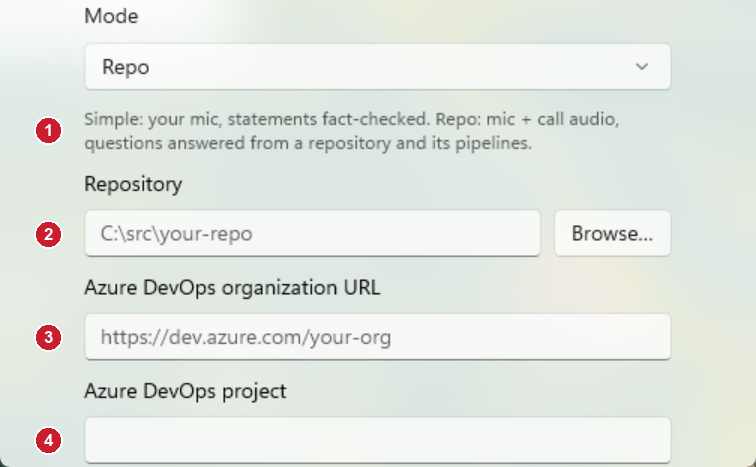
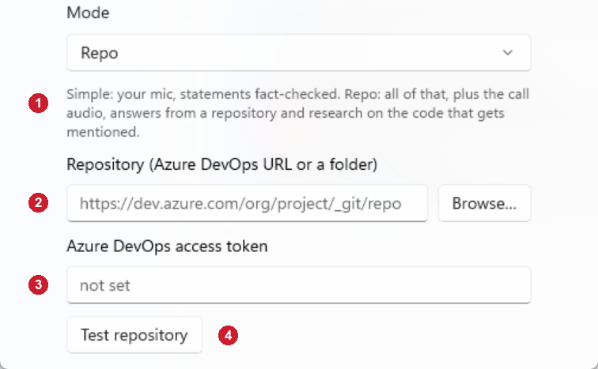

Repo mode settings
The settings from the Mode box down, with Mode set to Repo. The model fields above it did not change and are left out. Both pictures are Debug builds showing the settings inside the window with sample data; in the app they open as a flyout from the gear and scroll, so the Save button below the last control is cut off here.
Before

- Repo mode replaced Simple mode: questions about a repository were answered, but statements were no longer fact-checked.
- The repository could only be a folder on this PC.
- The Azure DevOps organization had to be typed.
- So did the project (and, below it, the token). Nothing told you whether any of it worked.
After

- Repo mode is Simple mode plus the repository: statements are still fact-checked, and a sentence that names a file or entity gets a code-research card.
- One box takes either an Azure DevOps git URL or a folder (Browse still picks a folder). A URL is cloned into the app's own cache and refreshed on every start.
- The access token is the only other thing to enter. The organization and project are read from the URL, or from where the folder was cloned from.
- Test repository checks what is typed: a folder is opened, a URL is asked for its branches using the token, and the result is shown next to the button.